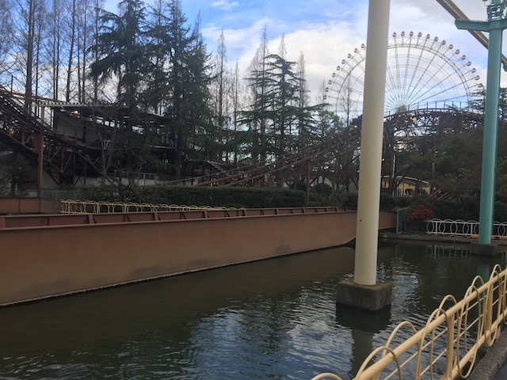

| |
.
Jet Coaster Review

We're here at Nagashima Spaland. Today, we'll be reviewing Jet Coaster. This is a....an intersting coaster. Well, for Americans. This is a Jet Coaster. These are coasters that are really popular in Japan (and despite doing a big theme park trip hitting most of Japan's biggest parks, this is the only Jet Coaster I hit). Now Jet Coasters are these big intimidating looking coasters that look like they're gonna provide a big extreme experience. However, when you ride them, they're pretty much a big glorified mine train with a bark much worse than its bite. Now this is one of the more...tame Jet Coasters. This one doesn't even pretend to be big or intimidating. It's a family coaster through and trough. A very Japanese family coaster. So let's get riding. Hop in the cars, buckle your seatbelt, and away we go! Climb up the lifthill, not very big, not much of a view, and then we reach the top. Dip down and head into a curve. A very big wide curve. Now this curve is right in the trees, so you get a woodsy feel while riding. That's nice. We then head down the first drop. It's not super big, and it doesn't give us a ton of speed. But just the fact that it's in the woods makes this a lot of fun. We then rise up another hill, and then head around another turn, just enjoying the view and being in all the woods. Granted, I rode it in the fall. So all the leaves had fallen when I rode it. Oh well. We then head down another small drop and head up another small hill. Go around another big wide turn. This gives us not only some cool visuals of being in the trees, but also of being underneath Jet Coaster's structure. That's nice. We dip down another small drop and into some straight track. On the ride, this is just an awkward pause and a bit of straight track. But off the ride, another cool visual trick is going on here. You see, we're crossing a pond here. And Nagashima Spaland essentially created a little bridge for Jet Coaster. So we're crossing a bridge right now. That's pretty cool. We then rise up another hill, go around another big turn, and just glie right into the station. So that's Jet Coaster. Coaster wise, this is very boring. It's a couple minor drops, a couple not steep hills, and a bunch of slow wide turns. However, the rides setting in the middle of the trees, and that bridge make it a fun little ride. Certainly not worth any trouble, and you could argue that this is solely for credit whoring. But it's a fun little relaxing ride with a nice view.
5/10
Location: Nagashima Spaland
Opened: ???
Built by: Togo
Last Ridden: October 31, 2018
Jet Coaster Photos


Home
|